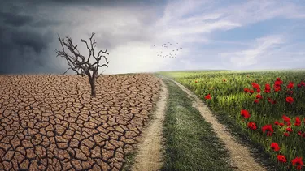

Cambio climaticio
El cambio climático se refiere a los cambios a largo plazo de las temperaturas y los patrones climáticos. Estos cambios pueden ser naturales,
El cambio climático es la modificación de la temperatura y del resto de variables del clima, que se está produciendo con una velocidad e inten
Está ocurriendo en todo el mundo y sus consecuencias pueden ser devastadoras, tanto para el medio ambiente como para las personas. La activid
La vida en la Tierra existe gracias a la combinación de tres factores: la correcta distancia del Sol, la composición química de la atmósfeambios pueden ser naturales, debido a variaciones en la actividad solar o erupciones volcánicas grandes. La humanidad sabe bien a qué se refieren, porque ya está aquí en forma de desertificación, subida del nivel del mar o de temperaturas extremas.
ndo con una velocidad e intensidad sin precedentes en la historia de la humanidad, como consecuencia de la actividad humana.
para las personas. La actividad humana, en concreto y principalmente, la quema de combustibles fósiles que generan gases de efecto invernadero, es la causa detrás de esta grave amenaza medioambiental, la mayor a la que se enfrenta la humanidad.
osición química de la atmósfera y la presencia del ciclo del agua. Concretamente, la atmósfera asegura que nuestro planeta tenga un clima adecuado para la vida gracias al llamado efecto invernadero natural. Cuando los rayos solares llegan a la superficie terrestre, en parte son absorbidos y en parte rebotan hacia el exterior; si no existiera la atmósfera, se dispersarían en el espacio pero, en cambio, una buena parte son retenidos y reenviados hacia la Tierra por algunos gases presentes en la atmósfera, precisamente los gases de efecto invernadero (entre ellos se encuentran, principalmente, el dióxido de carbono y el metano y también otros como el vapor de agua). Así es como se suma una cantidad de calor a la que ya proviene de los rayos absorbidos directamenteNos encontramos en un momento decisivo para afrontar con éxito el mayor desafío de nuestro tiempo: el cambio climático. Cada día, en diferentes puntos de la geografía mundial, el planeta nos manda mensajes sobre las enormes transformaciones que está sufriendo: desde cambiantes pautas meteorológicas que amenazan la producción de alimentos; hasta el aumento del nivel del mar que incrementa el riesgo de inundaciones catastróficas. Los efectos del cambio climático nos afectan a todos. Si no se toman medidas drásticas desde ya, será mucho más difícil y costoso adaptarse a sus efectos en el futuro..
